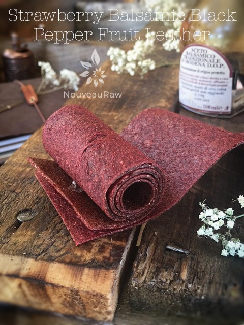

Strawberry Balsamic Black Pepper Fruit Leather

~ raw, vegan, gluten-free, nut-free ~
I was inspired to make this fruit leather by my Aged Balsamic and Strawberry Ice Cream. Bob and I love aged balsamic vinegar and have found that there is a fine art in selecting a good one.
The quality of which you use will make all the difference in the end flavor in your recipes. But I won’t go into the make-up of balsamic vinegar. If you check out the ice cream link that I put here, you can read more about it there.
As tantalizing as the balsamic vinegar is, the star of this show is the strawberry. I don’t know about you, but when I come across bright ruby-red strawberries at the local grocer or farmers market I just can’t pass them up… in fact there really isn’t a reason to resist them. To make sure you get da’creme of da’crop, you want to ensure that you get ripe ones.
Select plump, firm, fully red berries. A deep red color is one indicator of flavor, but strawberries actually continue to redden after being picked, even though they do not continue to get sweeter, so you can get some disappointing, but brightly colored strawberries, by relying on color alone. Use your nose and smell them, they should have a strong scent of strawberry when ripe.
We have all been trained in believing that bigger is better, but in this case, the small berries are often most flavorful. If you are lucky enough to find beautifully ripe strawberries be careful not to over-purchase as they tend to quickly mold when left at room temperature, and only last a couple of days in the refrigerator. But if you are anything like me and can’t resist these luscious morsels, especially if you get a really good deal… you will end up with far too many than you could possibly consume fresh in time. That being the case….FRUIT LEATHERS can be an answer to prayer. Well, shoot, there are tons of things you could do with them but you landed on this here recipe, and it entails using them in a fruit leather.
One last thing, until you are ready to make your leather DON’T wash the berries until you are ready to use them. Washing makes them more prone to spoiling, and it is a sad, sad day when you have to throw out fuzzy berries. (shakes head in sorrowed disbelief) Boy, I don’t know about you, but all this talk about red, sweet, plump strawberries is making me a little hungry. I am going to go visit the Oldfather Farm Kitchen while you read over this recipe. :)
yields 2 1/2 cups puree
- 4 cups organic strawberries
- 2 Tbsp chia seeds, ground in spice grinder
- 2 Tbsp maple syrup
- 2 tsp fresh cracked black pepper
- 3 tsp balsamic vinegar
- pinch Himalayan pink salt
Preparation:
- Select RIPE or slightly overripe strawberries that have reached a peak in color, texture, and flavor.
- Prepare the strawberries; wash, dry, and remove stems.
- Puree the fruit, chia, maple syrup, vinegar, salt, and pepper, in the blender or food processor until smooth.
- Taste and sweeten more if needed. Keep in mind that flavors will intensify as they dehydrate.
- When adding a sweetener do so a little at a time, and reblend, tasting until it is at the desired taste.
- It is best to use a liquid type sweetener. Don’t use a granulated sugar because it tends to change the texture.
- Allow the puree to sit for 10 minutes, so the chia has time to thicken the puree.
- Spread the fruit puree on teflex sheets that come with your dehydrator. Pour the puree to create an even depth of 1/8 to 1/4 inch. If you don’t have teflex sheets for the trays, you can line your trays with plastic wrap or parchment paper. Do not use wax paper or aluminum foil.
- Lightly coat the food dehydrator plastic sheets or wrap with a cooking spray, I use coconut oil that comes in a spray.
- When spreading the puree on the liner, allow about an inch of space between the mixture and the outside edge. The fruit leather mixture will spread out as it dries, so it needs a little room to allow for this expansion.
- Be sure to spread the puree evenly on your drying tray. When spreading the puree mixture, try tilting and shaking the tray to help it distribute more evenly. Also, it is a good idea to rotate your trays throughout the drying period. This will help assure that the leathers dry evenly.
- Dehydrate the fruit leather at 145 degrees (F) for 1 hour, reduce temp to 115 degrees (F) and continue drying for about 16 (+/-) hours. Flip the leather over about half way through, remove the teflex sheet and continue drying on the mesh sheet. Finished consistency should be pliable and easy to roll.
- Check for dark spots on top of the fruit leather. If dark spots can be seen it is a sign that it is not completely dry.
- Press down on the fruit leather with a finger. If no indentation is visible or if it is no longer tacky to the touch, the fruit leather is dry and can be removed from the dehydrator.
- Peel the leather from the dehydrator trays or parchment paper. If it peels away easily and holds its shape after peeling, it is dry. If it is still sticking or loses its shape after peeling, it needs further drying.
- Under-dried fruit leather will not keep; it will mold. Over-dried fruit leather will become hard and crack, although it will still be edible and will keep for a long time
- Storage: to store the finished fruit leather…
- Allow the leather to cool before wrapping up to avoid moisture from forming, thus giving it a breeding ground for molds.
- Roll them up and wrap tightly with plastic wrap. Click (here) to see photos on how I wrap them.
- Place in an air-tight container, and store in a dry, dark place. (Light will cause the fruit leather to discolor.)
- The fruit leather will keep at room temperature for one month, or in a freezer for up to one year.
Culinary Explanations:
- Why do I start the dehydrator at 145 degrees (F)? Click (here) to learn the reason behind this.
- When working with fresh ingredients, it is important to taste test as you build a recipe. Learn why (here).
- Don’t own a dehydrator? Learn how to use your oven (here). I do however truly believe that it is a worthwhile investment. Click (here) to learn what I use.
© AmieSue.com